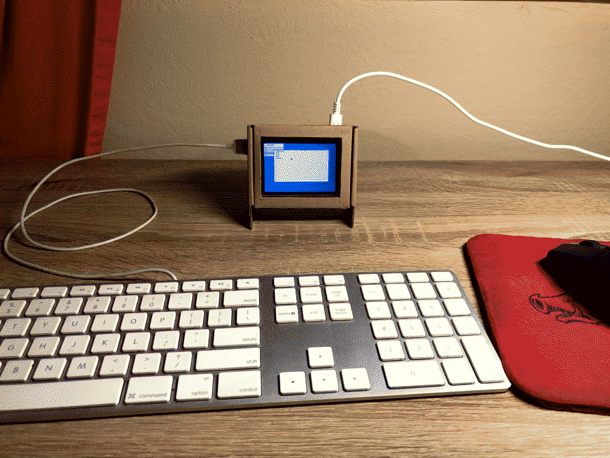
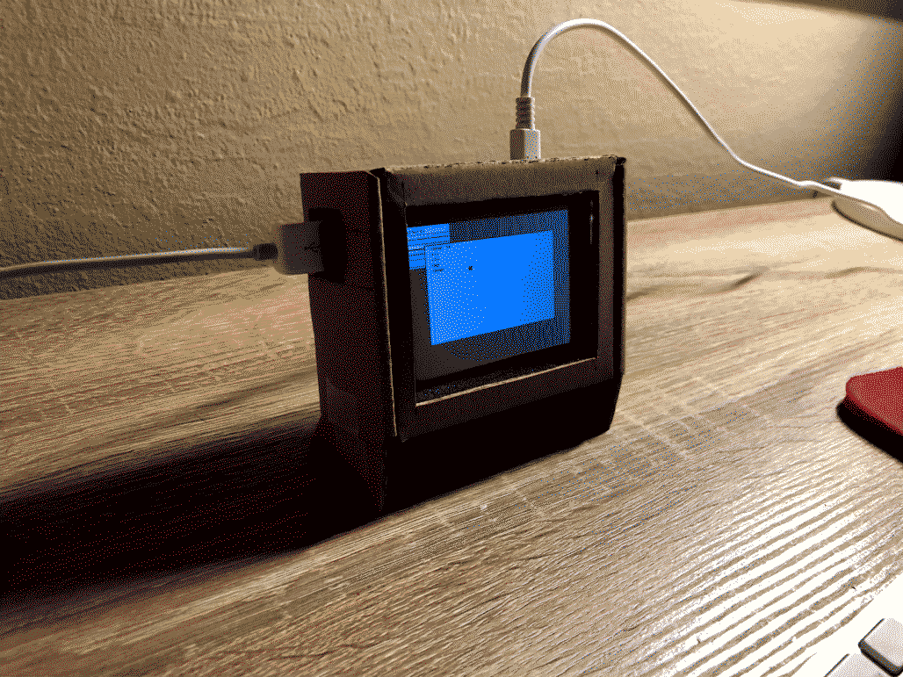

Bucephalus
This is my little friend Bucephalus (a random name which I find entertaining), a raspberry pi 4 running 9front. I don't use it for much right now, but I'm excited to learn more about Plan 9!
Isn't it cute!

The enclosure was made from the box the screen came in.
It's a little scuffed, but it'll do for now.
Incoming: